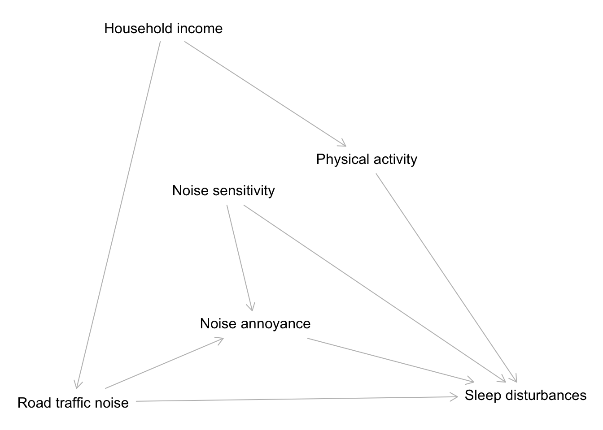

Homework 2
Due Sunday, September 13 at midnight CST on Moodle
Please turn in a single knitted PDF document containing your responses.
(If you have LaTeX installed, you can knit directly to PDF (preferred method). Otherwise, you can knit to HTML and “Print” the page to save it as a PDF.)
A template that you can work from is available here. Please save this file ashw2_LastName_FirstName.Rmd.
Introduction
The context of the exercises in this assignment comes from the study A Population-Based Study on Nighttime Road Traffic Noise and Insomnia published in the journal Sleep in 2017.
The article is freely available here. You will need to read parts of this article for this assignment.
The following learning objectives are covered in this assignment:
EXCH1: Apply the concepts of marginal and conditional exchangeability to answer questions about (hypothetical) data on potential outcomes.EXCH2: Give examples of when marginal and conditional exchangeability would and would not hold in various data contexts.EXCH3: Explain why a direct comparison of the outcomes in the treated and untreated is misleading as an estimate of a causal effect.DESI1: Explain how randomized experiments relate to exchangeability.DESI2: Explain how quasi-experimental and general observational studies relate to exchangeability.DESI3: Compare the strengths and weaknesses of different study designs for answering a research question.PGRA1: Apply the Causal Markov assumption to express the joint distribution of data.CNCP1: Explain how causal and noncausal paths relate to exchangeability and causal effects.DSEP1: Apply d-separation to block noncausal paths in causal DAGs with and without unobserved variables.DSEP2: Apply strategies to deal with exchangeability problems caused by unobserved variables.DSEP3: Simulate data from a causal DAG under linear and logistic regression SEMs to check d-separation properties through regression modeling and visualization.DSEP4: Explain how d-separation relates to conditional exchangeability.SENS1: Evaluate the sensitivity of findings to data quality and propose appropriate sensitivity analyses for a research investigation
Exercise 1
In judging the strength of evidence in research studies, it is important to critically evaluate the quality of data that the authors used.
Read the Noise Exposure Assessment section of the paper. Briefly explain 2 concerns that you have about how the authors determined noise levels. (4 sentences max.)
Exercise 2
Figure 1 shows (a simplified version of) the causal graph the authors used in their work. Write down the joint distribution of the data using the Causal Markov Assumption. Use the variable abbreviations below:
- D: Demography
- CD: Chronic diseases
- L: Lifestyle
- SES: Socioeconomic status
- NS: Noise sensitivity
- NA: Noise annoyance
- A: Road traffic noise
- Y: Sleep disturbances
Exercise 3
In Figure 1, which parts of the graph generate causal effects of the treatment (road traffic noise) on the outcome (sleep disturbances)? State these explicitly. (No explanation required.)
Are the observed outcomes across treatment levels a good representation of the missing potential outcomes? Which parts of the graph are relevant to look at to answer that question? (Describe this in general terms rather than stating all of them.) How do these parts of the graph create misleading associations? Explain in terms of relevant graph building block structures and exchangeability. (4 sentences max.)
Exercise 4
Consider a modified version of the Figure 1 graph shown below.

How can you identify a set of variables \(Z\) that will result in conditional exchangeability of the treatment groups? Briefly explain how your proposed process achieves this. (4 sentences max.)
Identify one possible set \(Z\). Show your work.
Exercise 5
Here, you’ll check if the set \(Z\) you identified in Exercise 4 works.
Simulate data from a causal graph that has the same structure as the graph in Exercise 4. All variables should be quantitative except for the outcome \(Y\), which should be binary. Display output from an appropriate check.
Exercise 6
Continuing from the causal graph in Exercise 4, suppose that the household income and physical activity variables were unmeasured.
Use two different strategies to try to regain conditional exchangeability (at least approximately). (4 sentences max.)
Exercise 7
What would the causal graph from Exercise 4 look like if this study had been a randomized experiment? You can draw the graph or explain how it would look different. Using this graph, make a connection between relevant graph concepts and marginal exchangeability. (4 sentences max.)
Exercise 8
Pick one quasi-experimental study design and explain in a few sentences how it could be applied in the setting of this sleep study. (4 sentences max.)
Exercise 9
(This exercise is not related to the sleep study.)
Suppose that the treatment (\(A\)) groups are exchangeable conditional on \(Z\). Given the table of information below, compute the following average causal effects (showing your work):
- Overall ACE: \(E[Y^{a=1} - Y^{a=0}]\)
- ACE within \(Z = A\): \(E[Y^{a=1} - Y^{a=0} \mid Z = A]\)
- ACE within \(Z = B\): \(E[Y^{a=1} - Y^{a=0} \mid Z = B]\)
(\(Z\) and \(A\) are binary, and \(Y\) is quantitative. \(n\) indicates the sample size for the 4 groups.)
| \(n\) | \(Z\) | \(A\) | \(E[Y\mid A, Z]\) |
|---|---|---|---|
| 80 | A | 1 | 40 |
| 20 | A | 0 | 20 |
| 20 | B | 1 | 30 |
| 80 | B | 0 | 20 |